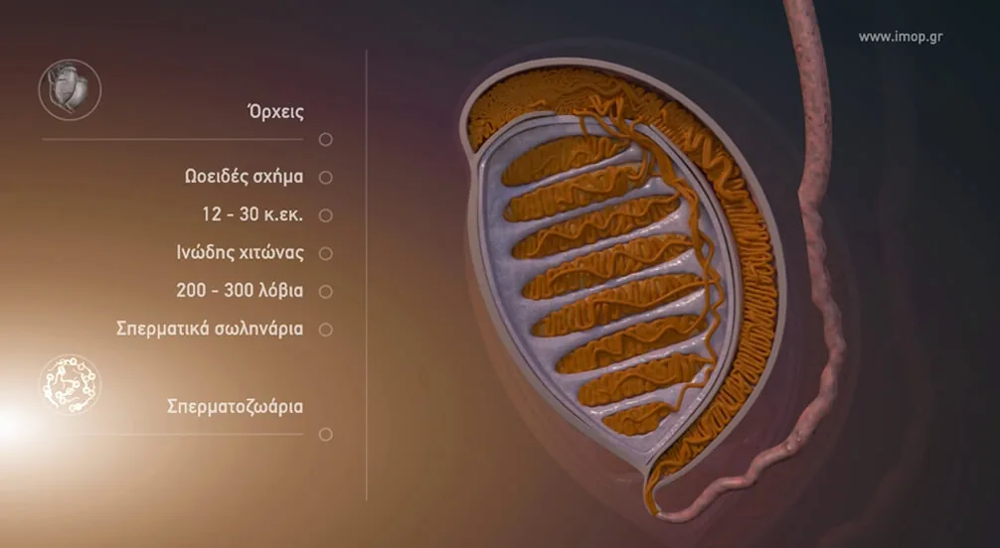
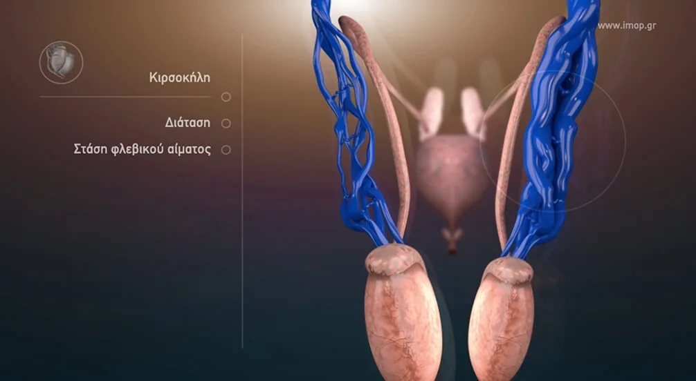
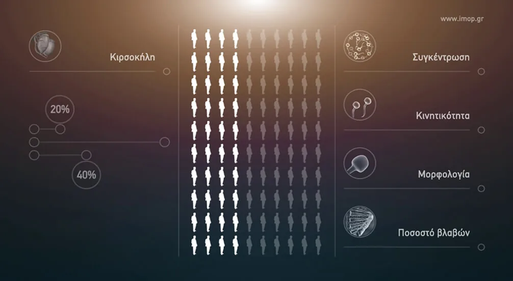
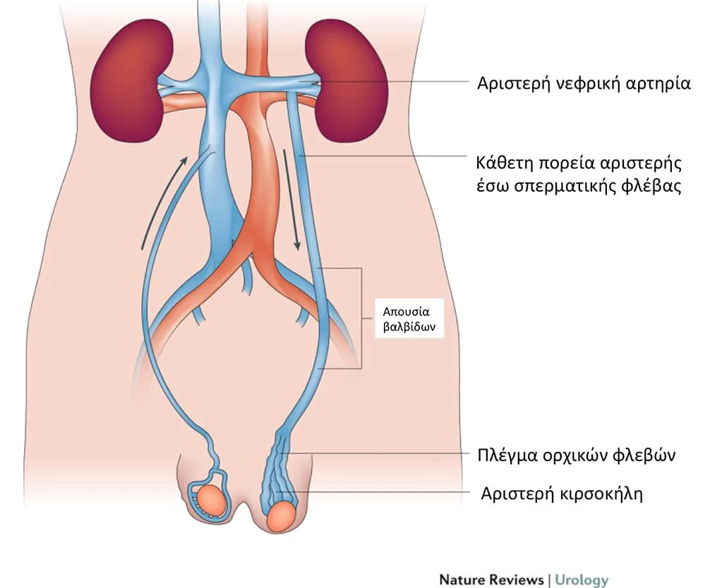
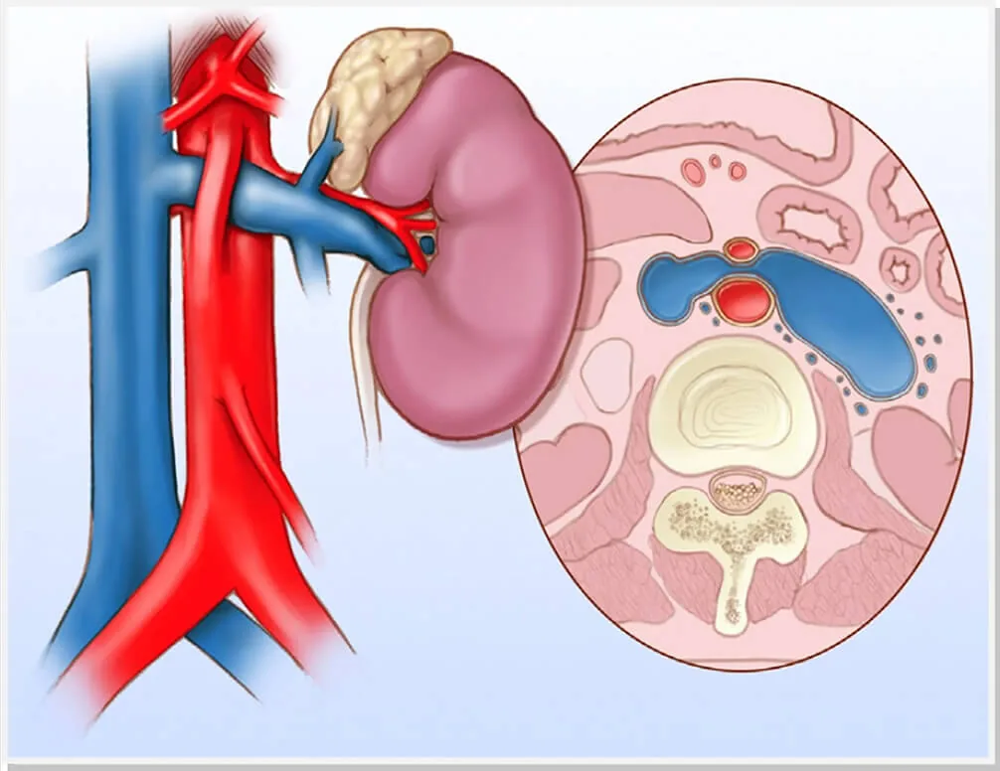
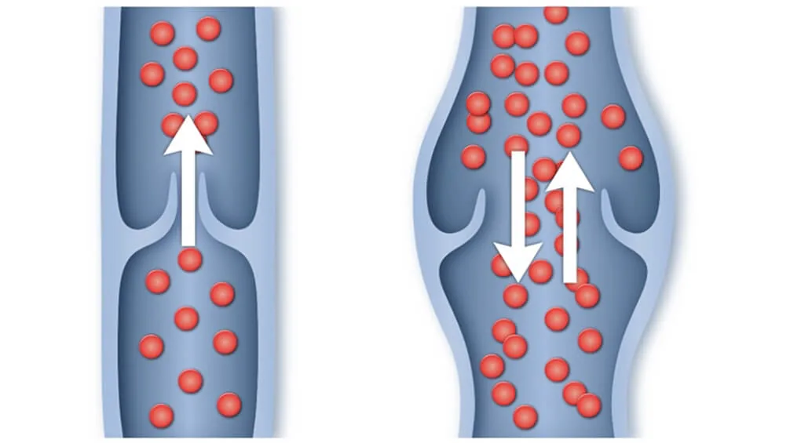
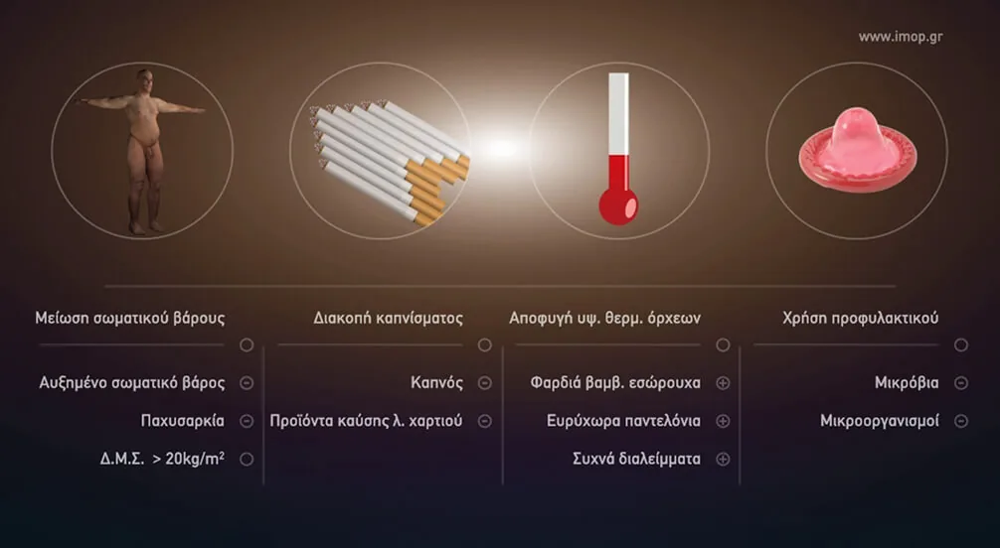
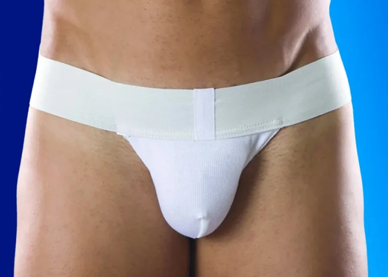

Το γεννητικό σύστημα του άνδρα
Το γεννητικό σύστημα του άνδρα αποτελείται από τους όρχεις και τις επιδυδιμίδες που βρίσκονται μέσα στο όσχεο (σάκκος απο δέρμα), καθώς και τους επικουρικούς γεννητικούς αδένες.

Τι είναι η κιρσοκήλη
Η κιρσοκήλη χαρακτηρίζεται από μια διεύρυνση των φλεβών των όρχεων, που όχι μόνο προκαλεί διόγκωση / οίδημα στο όσχεο (τη σακούλα που φιλοξενεί τους όρχεις) και ενόχληση, αλλά αποτελεί σε πολλές περιπτώσεις βασικό αίτιο της υπογονιμότητας του άνδρα.

Πόσο συχνή είναι
Η κιρσοκήλη εντοπίζεται περίπου στο 15-20% των ανδρών και στο 35-40% των ανδρών με πρωτοπαθή υπογονιμότητα και έως το 80% των ανδρών με δευτερογενή υπογονιμότητα. Αυξάνεται σταδιακά με την ηλικία φτάνοντας στο 14% στις ηλικίες 15-19 ετών και κλιμακώνεται κατά περίπου 10% για κάθε δεκαετία ζωής σε άνδρες άνω των 30 ετών. Συνεπώς η κιρσοκήλη τείνει να αναπτύσσεται στην εφηβεία.

Παρά τη συχνή εμφάνισή της στην αριστερή πλευρά, αμφοτερόπλευρη κιρσοκήλη παρατηρείται στο 50% των ανδρών με το πρόβλημα.
Δεξιά κιρσοκήληΚιρσοκήλη μόνο στη δεξιά πλευρά είναι σπάνια και απαιτεί άμεση διερεύνηση, καθώς μπορεί να σχετίζεται με άλλες παθολογικές καταστάσεις, ακόμη και όγκους.
Αιτιολογία
Η αιτιολογία της κιρσοκήλης θεωρείται πολυπαραγοντική. Πρώτον, η ανατομική διάταξη της αριστερής φλέβας των όρχεων, όπου η γωνία παροχέτευσης στη νεφρική φλέβα είναι 90 μοίρες, πιστεύεται ότι συμβάλλει σε αύξηση της υδροστατικής πίεσης εντός του φλεβικού πλέγματος.

Δεύτερον, η συμπίεση της αριστερής νεφρικής φλέβας μεταξύ της άνω μεσεντέριας αρτηρίας και της κοιλιακής αορτής, γνωστή ως «σύνδρομο καρυοθραύστη», αναγνωρίζεται ως ένας άλλος παράγοντας που συμβάλλει στη ροή του αίματος στην αριστερή φλέβα του όρχεως.

Αυτοί οι ανατομικοί παράγοντες μπορεί να εξηγήσουν την κυριαρχία της αριστερής κιρσοκήλης.
Πέρα απο τους παραπάνω ανατομικούς λόγους, είναι σαφές οτι η πάθηση οφείλεται σε γενετικά ανεπαρκείς βαλβίδες στις φλέβες των όρχεων. Για να γίνει πιο κατανοητό, η κιρσοκήλη είναι πρακτικά ότι οι κιρσοί στα πόδια, μόνο που εδώ αφορά τις φλέβες των όρχεων και παρατηρείται σε νεαρές ηλικίες. Είναι διεύρυνση των φλεβών μέσα στη χαλαρή σακούλα του δέρματος που συγκρατεί τους όρχεις, το όσχεο. Οι φλέβες μεταφέρουν το χρησιμοποιημένο αίμα (αφου έχει δεσμευτεί το οξυγόνο) από τους όρχεις. Η κιρσοκήλη εμφανίζεται όταν το αίμα λιμνάζει στις φλέβες ή επιστρέφει στους όρχεις (παλινδρομεί) αντί να φύγει προς τα πάνω, έξω από το όσχεο.

Πώς βλάπτει τους όρχεις
Η αδυναμία των βαλβίδων να κλείσουν, αποτρέποντας την επιστροφή του χρησιμοποιημένου φλεβικού αίματος στους όρχεις είναι η κύρια αίτια τόσο της παθολογικής διάτασης του φλεβικού πλέγματος, όσο και της βλάβης στους όρχεις. Η αδυναμία απομάκρυνσης του φλεβικού αίματος από τους όρχεις έχει ως αποτέλεσμα την αδυναμία εισόδου αρτηριακού αίματος που είναι απαραίτητο για να λειτουργήσουν οι όρχεις. Έτσι, παρουσία κιρσοκήλης, ο όρχις δεν αιματώνεται, η παραγωγή σπερματοζωαρίων επηρεάζεται, και με την πάροδο του χρόνου παρατηρείται μείωση του όγκου των όρχεων λόγω ατροφίας και φυσικά περαιτέρω επιδείνωση των παραμέτρων του σπερμοδιαγράμματος.
Στη συνέχεια, αυτές οι αλλαγές οδηγούν σε ένα αλλοιωμένο μικροπεριβάλλον των όρχεων και συσσώρευση ελεύθερων ριζών οξυγόνου (ROS), των μη φυσιολογικών αλλαγών στη θερμοκρασία των όρχεων και της συσσώρευσης τοξικών μεταβολιτών, που οδηγούν μεταξύ άλλων σε κατακερματισμό του DNA του σπέρματος.
Πρόκειται δηλαδή για έναν καταρράκτη γεγονότων που καθορίζει την ανδρική γονιμότητα και πρέπει να προλαβαίνετε.
Ετσι, στα αγόρια που διανύουν την εφηβεία, η κιρσοκήλη μπορεί να αναστείλει την ανάπτυξη των όρχεων, την παραγωγή ορμονών και άλλους παράγοντες που σχετίζονται με την υγεία και τη σωστή λειτουργία των όρχεων.
Πρόληψη
Το διάγραμμα παρουσιάζει απλές συμβουλές πρόληψης της γονιμότητας του άνδρα.

Ασθενείς με ασυμπτωματική κιρσοκήλη και γόνιμο σπερμοδιάγραμμα πρέπει να ακολουθούν δύο σημαντικές συμβουλές:
- Χρήση σπασουάρ που κρατά τους όρχεις προς τα πάνω, ιδιαίτερα οταν γυμνάζονται.
- Επανάληψη σπερμοδιαγράμματος κάθε χρόνο και κλινική επανεκτίμηση.
